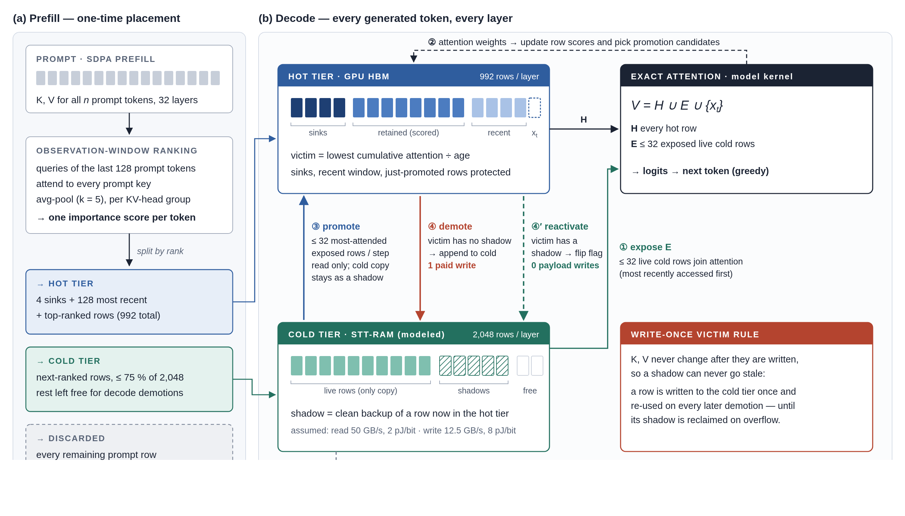
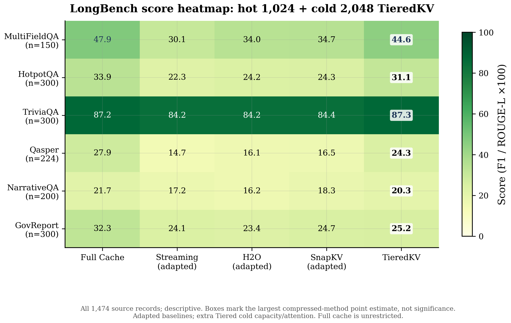
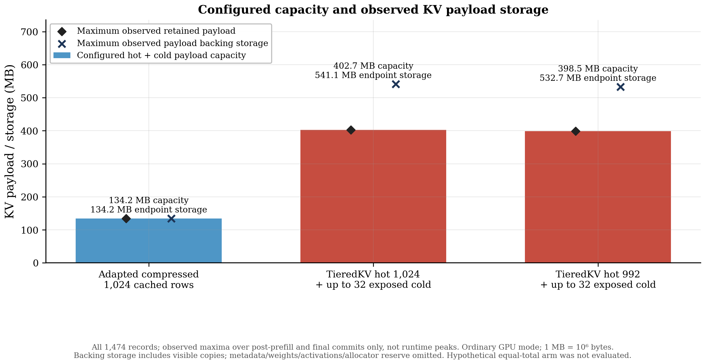
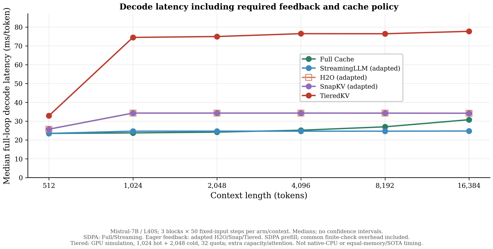

A Write-Aware 2-Tier KV-Cache Memory Hierarchy for Long-Context LLM Inference
Exploiting KV immutability to cut non-volatile-memory write traffic
SUBMITTED BY
Prashant Kumar
M25CSE023
SUPERVISED BY
Dr. Palash Das
Department of CSE, IIT Jodhpur
NOVEMBER 2026
Abstract
Abstract
Large language models generate text one token at a time, and every step re-reads a key–value (KV) cache that holds the attention keys and values of all earlier tokens. For long inputs this cache grows to hundreds of megabytes per request, fills the GPU memory and makes decoding limited by memory traffic rather than computation. The usual remedy, token eviction (StreamingLLM, H2O, SnapKV), keeps only tokens that look important and deletes the rest permanently, so a fact that is needed later cannot be recovered. Sparse retrieval methods such as Quest avoid deletion but keep the entire cache resident, so they save bandwidth but not capacity.
This thesis proposes TieredKV, a write-aware two-tier KV-cache hierarchy. A small hot tier in GPU memory holds the most useful rows; a larger cold tier, modelled as spin-transfer-torque magnetic RAM (STT-RAM), receives evicted rows instead of deleting them. STT-RAM is dense, non-volatile and cheap to read, but its writes are slow and energy-hungry. The design therefore builds on one property of the KV cache: once a token's key and value are written, they never change. A cold copy can never become stale, so a row that is promoted back to the GPU keeps its cold copy as a shadow, and a later demotion of the same row needs no new write. This write-once victim cache is combined with attention-driven promotion: each decoding step, up to 32 cold rows join the model's own attention computation, and the real attention weights decide which rows return to the GPU.
TieredKV was evaluated on Mistral-7B-Instruct-v0.2 over every input of six LongBench tasks (1,474 inputs, seven configurations, 10,318 real predictions). When every method attends to the same number of cached rows per step, TieredKV reaches a six-task average of 38.50, compared with 32.12–33.80 for adapted StreamingLLM, H2O and SnapKV and 41.79 for the uncompressed cache. Shadows avoided 91.4 % of decode-time cold-tier writes (40.7 % when the initial placement of the prompt is also counted). The design has clear costs: about 3× the configured KV storage of a 1,024-row compressed cache and, in the current Python implementation, ≈75–78 ms per token against 23–34 ms for the baselines. The official SnapKV implementation, whose cache grows during decoding, scores 0.7–1.0 points higher on average; no state-of-the-art claim is made. All reported numbers were re-checked from raw outputs with independent code.
Keywords: large language models, KV cache, memory hierarchy, non-volatile memory, STT-RAM, write reduction, long-context inference
Contents
Table of Contents
Chapter 1
Introduction
1.1 Motivation
Large language models (LLMs) are increasingly asked to work with long inputs: entire reports, books, code bases and multi-turn conversations. Generating an answer over such an input is dominated not by arithmetic but by memory. At each step the model must look back at every earlier token, and to avoid recomputing their internal representations it stores their attention keys and values in the KV cache. For Mistral-7B, one token occupies 128 KB of KV data across its 32 layers; a 30,000-token document therefore needs close to 4 GB, and every generated token re-reads that whole cache.
When GPU memory runs short, current systems mostly choose between two imperfect options. They either delete tokens judged unimportant, which is cheap but irreversible, or they keep everything on the GPU and read selectively, which preserves quality but saves no capacity. What is missing is a third place for a token: one that is cheaper and denser than GPU memory, where a token that is "probably no longer needed, but maybe" can wait without being lost.
1.2 Problem statement
Emerging non-volatile memories such as STT-RAM are natural candidates for such a tier: they are dense, retain data without power and read cheaply. Their weakness is writing, which is slower, costs more energy and wears the cell. A cache-management policy designed for symmetric memory would write to this tier on every eviction and quickly squander its advantages. This thesis therefore asks:
Research question
Can a two-tier KV cache that keeps evicted tokens in a write-expensive non-volatile tier recover most of the accuracy lost by permanent eviction, while keeping the number of writes to that tier small — and what does it cost in memory and time?
1.3 Contributions
A write-aware two-tier KV hierarchy (TieredKV). Evicted rows are demoted to a bounded STT-RAM cold tier instead of being deleted, and the policy treats the number of cold-tier writes as a first-class design quantity.
Attention-driven promotion. Each step, up to 32 cold rows join the model's exact attention computation; the model's own attention weights decide which rows return to the GPU, replacing the bound-based estimate used in the earlier design.
A write-once victim cache with full write accounting. Because KV rows are immutable, a promoted row keeps its cold copy as a shadow; demoting it again costs zero payload writes. Every paid and avoided write is counted per layer and per step.
A complete, independently verified evaluation. 10,318 predictions on six LongBench tasks, comparisons with adapted and official baselines, measured latency, modelled traffic and energy, and an audit that re-scores every output with independent code and re-executes a sample of runs on the GPU.
The thesis states its limitations as clearly as its results. In particular, the idea of writing an immutable KV page only once is shared with recent offloading work (FlexiCache, Section 3.4), STT-RAM is modelled rather than physically present, and the official SnapKV baseline is slightly more accurate.
1.4 Organisation of the report
Chapter 2 explains how LLM inference uses the KV cache and introduces STT-RAM. Chapter 3 reviews eviction, retrieval and offloading methods and identifies the gap. Chapter 4 presents the immutability property and the design principles that follow from it. Chapter 5 describes TieredKV in detail. Chapter 6 gives the experimental methodology, Chapter 7 the results and Chapter 8 the verification of those results. Chapter 9 discusses limitations, Chapter 10 the planned future work, and Chapter 11 concludes.
Chapter 2
Background
2.1 How an LLM generates text
A decoder-only transformer predicts the next token of a sequence. Given "The cat sat on the", it predicts "mat"; the prediction is appended to the input and the process repeats. This is autoregressive generation. The model is a stack of identical decoder blocks (32 in Mistral-7B). Each block contains a self-attention sub-layer, in which every token forms a query q, a key k and a value v and combines the values of all earlier tokens weighted by softmax(q·k), followed by a feed-forward network.
Inference has two phases. In prefill, the whole prompt is processed in parallel; this is compute-bound and keeps the GPU busy. In decode, tokens are produced one at a time, and each new token must attend to all previous ones. Decode performs little arithmetic per byte read and is therefore memory-bandwidth-bound: the GPU spends most of its time waiting for data.
2.2 The KV cache
Without caching, generating token T would require recomputing the keys and values of all T−1 earlier tokens, giving quadratic total work. The KV cache stores each token's keys and values once, at every layer, so each decode step computes only the new token's vectors and reads the rest. The cache turns a quadratic process into a linear one, but it grows linearly with the sequence length.
Quantity (Mistral-7B-Instruct-v0.2, bf16)
Value
Layers × KV heads × head dimension
32 × 8 × 128
One token, one layer (K and V)
2 × 8 × 128 × 2 B = 4 KB
One token, all layers
4 KB × 32 = 128 KB
1,024 retained tokens (typical compressed budget)
134.2 MB
31,500 tokens (longest input used here)
≈ 4.1 GB
Table 2.1. KV-cache size for the model used in this work. Mistral uses grouped-query attention (GQA): 32 query heads share 8 KV heads, so the cache is 4× smaller than with one KV head per query head.
Two consequences follow. First, capacity: for long inputs or several concurrent requests the cache, not the roughly 14.5 GB of model weights, decides whether a workload fits on the GPU. Second, traffic: every generated token re-reads the entire cache, so the decode speed is set by how many bytes are moved. Both pressures motivate keeping fewer rows on the GPU.
2.3 STT-RAM as a memory technology
Spin-transfer-torque magnetic RAM stores each bit in the magnetic orientation of a magnetic tunnel junction. Reading senses the junction's resistance, which is fast and needs little energy. Writing must flip the magnetisation with a current pulse, which takes longer, costs several times more energy per bit and gradually wears the cell. STT-RAM retains its contents without power, so it does not need the constant refresh or standby power of DRAM, and it is denser than SRAM. These properties make it attractive for data that is read often and changed rarely — provided writes are kept to a minimum.
Scope of this work
No STT-RAM hardware is used. In the evaluation the cold tier is a GPU tensor, and STT-RAM latency and energy are modelled by applying assumed per-bit prices (Table 4.2) to the real event counts recorded during decoding. Write counts are logical events, not physical device writes.
Chapter 3
Related Work
Work on reducing the KV cache falls into three broad families: methods that permanently evict tokens, methods that keep all tokens but read selectively, and systems that offload part of the cache to another memory.
3.1 Permanent eviction
StreamingLLM (Xiao et al., ICLR 2024) observed that the first few tokens act as attention sinks: they absorb attention mass that has nowhere else to go, and removing them breaks generation. It keeps four sink tokens plus a sliding window of recent tokens and discards everything in between, which gives stable generation at constant memory.
H2O (Zhang et al., NeurIPS 2023) keeps the "heavy hitters" — tokens that have accumulated the most attention — together with recent tokens, and evicts the rest as decoding proceeds.
SnapKV (Li et al., NeurIPS 2024) scores prompt tokens once at the end of prefill. The queries of a trailing observation window attend to the whole prompt; the scores are pooled and the top-ranked positions per head are kept. It compresses the prompt cache by large factors with small accuracy loss on LongBench.
All three share one failure mode: eviction is permanent. A token judged unimportant early may be exactly what a later question needs, and once deleted it cannot be recovered.
3.2 Selective retrieval without deletion
Quest (Tang et al., ICML 2024) keeps the full cache and groups tokens into pages. For each page it stores the per-dimension minimum and maximum of the keys; at each step these give an upper bound on the attention score of any token in the page, and exact attention is computed only over the highest-scoring pages. Nothing is lost, but the full cache must remain resident: Quest saves bandwidth, not capacity, and assumes a single flat memory.
3.3 The gap
Method
Family
Saves capacity?
Recovers evicted tokens?
Memory tiers
StreamingLLM
Eviction (sinks + window)
Yes
No — permanent
GPU only
H2O
Eviction (heavy hitters)
Yes
No — permanent
GPU only
SnapKV
Eviction (prompt compression)
Yes
No — permanent
GPU only
Quest
Sparse retrieval
No — full cache resident
Yes — nothing evicted
GPU only
TieredKV (this work)
Write-aware tiering
Yes (hot tier)
Yes, within the cold tier
GPU + STT-RAM (modelled)
Table 3.1. Positioning of the main prior methods.
Two gaps follow from this comparison. Gap 1 — the missing middle tier: the design space is binary, resident or deleted, with no cheap and reversible place for a token that is probably cold but might be needed. Gap 2 — device asymmetry is invisible: existing policies assume that writing a token costs the same as reading it. On a non-volatile tier this is false, so a policy tuned for symmetric memory is mistuned from the start.
3.4 Offloading and the closest related system
FlexiCache (Takbir et al., MLSys 2026) classifies KV heads as temporally stable or unstable. For stable heads it keeps only the top pages on the GPU and offloads the rest to host memory; its Section 3.3 states that each page of a stable head is offloaded exactly once and that host memory always holds the full cache for those heads. FlexiCache therefore already exploits the immutability of KV pages to write each page only once. We do not claim the write-once idea by itself as new. TieredKV differs in the setting it targets: the cold tier is bounded (2,048 rows per layer, not a full mirror) and write-expensive (non-volatile), so shadows must be reclaimed when the tier overflows, and every write is accounted for as a scarce resource. Making this difference into a measured, defensible contribution is part of the future work in Chapter 10.
Chapter 4
The Key Property and Design Principles
4.1 KV rows are immutable
Once the model has computed a token's key and value at a layer, those vectors are never modified again: later tokens read them but do not change them. This sets the KV cache apart from other data in an inference system.
Data type
Life cycle
Consequence
Model weights
Read-only, always resident
Normally cached; no write traffic
Activations
Written, read once, discarded
Short-lived, no reuse
KV cache
Written once, read many times, never modified
A stored copy can never become stale
Table 4.1. Access patterns of the main data types during inference.
Three consequences shape the design:
Write-once, read-maybe. A KV row's access pattern matches what a non-volatile memory is good at: the expensive operation (write) happens rarely, the cheap one (read) often.
A copy is permanently valid. A backup of a row in the cold tier is bit-identical to the live copy for its whole lifetime. No coherence protocol, dirty bits or invalidation are needed.
"How many times must this row be written?" becomes a design variable rather than a fixed cost. If a backup already exists, moving a row out of the GPU can cost zero writes.
4.2 Cost model
To translate event counts into time and energy, the evaluation uses the prices in Table 4.2 (implemented in src/cost_model.py). The GPU bandwidth is the specification of the NVIDIA L40S used for the experiments; every other value, including the 4× STT-RAM write/read asymmetry, is an assumed price chosen to represent the technology, not a measurement.
Tier
Read GB/s
Write GB/s
Read pJ/bit
Write pJ/bit
Standby mW/MB
GPU VRAM (L40S GDDR6)
864
864
12
12
8
STT-RAM (modelled)
50
12.5
2
8
1
Table 4.2. Prices used by the cost model. Replacing these assumptions with values from published device studies or a circuit-level simulator, and testing how sensitive the conclusions are to them, is listed as future work.
4.3 Design principles
Demote, don't delete
A row leaving the GPU goes to the cold tier, where it can still be used and brought back.
Read freely, write rarely
Cold-tier reads are cheap; every write is avoided where an existing copy can be re-used.
Let the model decide
Promotion uses the model's real attention weights, not an estimate.
Count everything
Promotions, demotions, paid and avoided writes and drops are recorded per layer and step.
Chapter 5
Proposed Design: TieredKV
5.1 Overview
TieredKV maintains, independently in each of the model's 32 layers, two pools of KV rows:
a hot tier of 992 rows (or 1,024 in the second configuration) in GPU memory, which is always part of attention; and
a cold tier of 2,048 rows, modelled as STT-RAM, which holds rows evicted from the hot tier. Each cold row is either live (its only copy) or a shadow (a clean backup of a row that is currently also in the hot tier).
Because the policy runs per layer, the same token can be hot in one layer and cold in another. Figure A shows the complete design.

Figure A. TieredKV architecture. (a) Prefill: the prompt is ranked once and split into hot, cold and discarded rows. (b) Decode, for every generated token and every layer: ① expose up to 32 cold rows to attention, ② use the attention weights as feedback, ③ promote the most-attended exposed rows (a read; the cold copy stays as a shadow), ④ demote a victim (one paid write if it has no shadow) or ④′ reactivate its shadow (zero payload writes), ⑤ on overflow reclaim shadows first, then drop least-recently-used live rows.
5.2 Prefill: one-time placement
The prompt is processed normally, producing keys and values for every prompt token in all 32 layers. TieredKV then ranks the tokens in the style of SnapKV: the queries of the last 128 prompt tokens (the observation window, which usually contains the question) attend to every earlier key; the attention is average-pooled with kernel size 5 within each KV-head group, giving one importance score per token. The tokens are then split by rank:
Hot tier: the 4 sink tokens, the 128 most recent tokens and the highest-ranked remaining tokens, up to 992 rows.
Cold tier: the next-ranked tokens, filling at most 75 % of the 2,048 cold rows, so that space is left for rows demoted during decoding.
Discarded: all remaining prompt tokens.
5.3 The decode loop
After each model call, five stages run in every layer.
Stage
What happens
1 · Attend
The unmodified model computes exact attention over the visible set: all hot rows, the ≤ 32 exposed cold rows and the new token (at most 1,025 rows for hot 992). No approximation is applied inside attention.
2 · Feedback
The attention weights update each hot row's cumulative score and age, and record how much attention each exposed cold row received.
3 · Promote
Up to 32 of the most-attended exposed cold rows are copied to the hot tier. This is a cold-tier read. The cold copy is kept as a shadow. A re-entry gate defers promotion of rows that recently left, which prevents rows from bouncing back and forth.
4 · Evict and demote
If the hot tier is over budget, the row with the lowest cumulative attention ÷ age leaves. Sinks, the recent window and just-promoted rows (one step of grace) are protected. If the victim has a shadow, the shadow is reactivated: 0 payload writes. Otherwise the row is appended to the cold tier: 1 paid write.
5 · Expose
The ≤ 32 most recently accessed live cold rows are selected to join attention in the next step. If the cold tier is full, shadows are reclaimed first and only then are least-recently-used live rows dropped permanently.
Table 5.1. The five stages of the decode loop, per generated token and per layer.
Dividing cumulative attention by age matters: with cumulative attention alone, old rows look important simply because they have existed for longer. The ratio measures how useful a row is per step.
5.4 The write-once victim cache
The central mechanism follows directly from immutability. A row is written to the cold tier the first time it is demoted. If it is later promoted, its cold copy is not deleted but kept as a shadow. When the same row is demoted again, the policy simply flips a flag that turns the shadow back into the live copy; no data is written. A row is therefore written to the cold tier once and re-used on every later demotion, until its shadow is reclaimed under overflow.
Event
Hot tier
Cold tier
Payload writes
First demotion of row r
r leaves
r appended as live
1 (paid)
Promotion of r
r enters
copy kept as shadow
0
Second demotion of r
r leaves
shadow becomes live (flag flip)
0 (avoided)
Cold tier full
—
shadows reclaimed first, then LRU live rows dropped
0
Table 5.2. Life of one row under the write-once victim rule. One write unit is one token's K and V in one layer (4 KB).
The mechanism trades memory for writes: shadows occupy cold-tier capacity that could otherwise hold additional live rows. Chapter 7 measures both sides of this trade-off.
5.5 Evolution from the earlier three-tier design
An earlier version of this work, evaluated only in simulation, used three tiers and a bound-based promotion estimate. Running the design on a real model showed which parts contributed, and the design was simplified accordingly.
Question
Earlier design (3 tiers)
Current design (2 tiers)
Reason for the change
Memory levels
GPU → STT-RAM → CPU memory
GPU → STT-RAM
The third level was never read back; it only delayed deletion.
Use of slow-tier tokens
Only after promotion to the GPU
Up to 32 join attention every step
Old information can contribute to the answer immediately.
Choice of what to promote
Min/max key bound (estimate)
Model's real attention weights
The bound was loose and caused promotion churn.
Victim choice
Least total attention
Least attention per step of age
Old rows no longer look important merely for being old.
Evaluation
Simulation with synthetic data
Mistral-7B, 6 tasks, 10,318 predictions
Results come from real model runs.
Table 5.3. Changes from the earlier design.
Chapter 6
Experimental Methodology
6.1 Model, hardware and decoding
All experiments use Mistral-7B-Instruct-v0.2 (32 layers, 32 query heads, 8 KV heads, head dimension 128) in bfloat16, on two NVIDIA L40S 48 GB GPUs with PyTorch 2.5.1 and Transformers 5.15. Decoding is greedy with batch size 1. Inputs longer than 31,500 tokens are truncated in the middle, as in LongBench's reference protocol. Every method receives the identical tokenised input, the same decoding settings and the same output-length limit; only the KV-cache policy differs.
6.2 Benchmark
Task
Type
Inputs
Metric
Max new tokens
MultiFieldQA-en
Single-document QA
150
F1
64
Qasper
Single-document QA
224
F1
128
NarrativeQA
Single-document QA
200
F1
128
HotpotQA
Multi-document QA
300
F1
32
TriviaQA
Few-shot QA
300
F1
32
GovReport
Summarisation
300
ROUGE-L
512
Total
1,474
× 7 configurations = 10,318 predictions
Table 6.1. LongBench tasks. Every input of each task is used (LongBench-E splits; NarrativeQA standard split). Scores are reported on a 0–100 scale; the six-task average weights each task equally.
6.3 Methods compared
Configuration
KV kept per layer
Notes
Full cache
All tokens
Unrestricted reference (upper bound)
StreamingLLM (adapted)
1,024 fixed
Sinks + recent window
H2O (adapted)
1,024 fixed
Heavy hitters + recent window
SnapKV (adapted)
1,024 fixed
Prompt compression with a fixed decode budget
SnapKV, upstream selector
1,024 per query head + growing decode cache
Original selector; cache grows during decoding
SnapKV, official GQA code
1,024 + growing decode cache
Added later as an additional check
TieredKV, hot 1,024
1,024 hot + 2,048 cold
Same hot budget as the baselines
TieredKV, hot 992
992 hot + 2,048 cold
Same attended rows: 992 + 32 = 1,024
Table 6.2. Configurations. "Adapted" baselines are re-implemented in this code base with a fixed 1,024-row budget. Seven configurations form the main evaluation; the official GQA SnapKV run was executed separately on the same 1,474 inputs.
6.4 What "fair" means in this comparison
Methods with different memory structures cannot be equal in every respect at once, so the comparison is made under explicitly stated budgets:
Equal hot budget (TieredKV hot 1,024): every method keeps 1,024 rows on the GPU; TieredKV additionally keeps a cold tier.
Equal attended rows (TieredKV hot 992): every method attends to at most 1,024 cached rows per step. This was verified from the actual tensor sizes passed to the model in all runs: TieredKV hot 992 never attended more than 1,025 rows including the new token, exactly like the 1,024-row baselines.
Neither setting equalises total memory: TieredKV stores more rows than the fixed-budget baselines, while the SnapKV variants let their cache grow during decoding. An equal-total-memory comparison is the most important item of future work (Section 10.3).
6.5 Measurements
Accuracy: task metric per input, averaged per task and then equally across tasks.
Writes: paid and avoided cold-tier writes, promotions, demotions and drops, recorded by the policy per layer and per step.
Storage: configured capacity and observed KV storage at the end of prefill and at the end of each request.
Latency: measured median inter-token latency on the L40S in a separate timing benchmark (contexts of 512 to 16,384 tokens, 150 measured steps each).
Modelled traffic time and energy: real event counts multiplied by the prices of Table 4.2.
Chapter 7
Results
Figures in this chapter keep the numbers used in the presentation and in the repository (figures_final/, Figures 1–9).
7.1 Accuracy
Method
MF-QA
Qasper
Narr.QA
HotpotQA
TriviaQA
GovRep.
Avg.
Full cache
47.85
27.86
21.70
33.86
87.15
32.32
41.79
SnapKV, upstream selector (growing)
46.47
26.10
21.23
30.93
87.25
26.85
39.80
SnapKV, official GQA (growing)
46.27
25.71
20.72
30.96
87.39
26.09
39.52
TieredKV, hot 1,024
44.62
24.28
20.33
31.14
87.32
25.17
38.81
TieredKV, hot 992
43.80
23.72
20.28
31.44
86.85
24.87
38.50
SnapKV (adapted, 1,024)
34.65
16.52
18.26
24.31
84.37
24.66
33.80
H2O (adapted, 1,024)
34.04
16.10
16.24
24.17
84.24
23.42
33.04
StreamingLLM (adapted, 1,024)
30.13
14.67
17.23
22.34
84.21
24.14
32.12
Table 7.1. LongBench scores (0–100) over all 1,474 inputs. Rows in italics use more or growing memory and are shown for reference. Values are recomputed from the raw outputs (results/figures_20261118_renumbered/task_values.csv; official GQA run: results/gqa_baseline_20261016/).
Same hot budget. TieredKV (hot 1,024) reaches a six-task average of 38.81, against 41.79 for the full cache and 32.12–33.80 for the adapted baselines. The adapted baselines lose 8.0–9.7 points relative to the full cache; TieredKV recovers 5.0–6.7 of them. On TriviaQA it matches the full cache (87.3 vs 87.2).
Same attended rows. Shrinking the hot tier to 992 costs only 0.31 points (38.50). TieredKV is still 4.7 to 6.4 points above the adapted baselines on average, and it is the best of the fixed-budget compressed methods on all six tasks. The margin is largest on the single-document QA tasks (MultiFieldQA +9.2, Qasper +7.2 over adapted SnapKV) and very small on GovReport (+0.2). The explanation is the design's purpose: rows evicted from the hot tier are not lost, and the useful ones return through exposure and promotion.
Figure 1. Accuracy at the same hot budget: every compressed method keeps 1,024 rows on the GPU; TieredKV additionally keeps 2,048 cold rows, of which 32 join attention each step.
Figure 2. Accuracy at the same number of attended rows: TieredKV's hot tier is reduced to 992 so that hot rows plus 32 exposed cold rows equal the baselines' 1,024.

Figure 9. Per-task score heatmap for TieredKV (hot 1,024), the full cache and the three adapted baselines.
7.2 Cold-tier write traffic
Over all 1,474 inputs with hot 992, decoding required 57.5 million demotions. One unit is one token's K and V in one layer (4 KB), summed over the 32 layers. Of these, 52.6 million re-used an existing shadow and only 4.96 million paid a write.
Hot 992
MF-QA
HotpotQA
TriviaQA
Qasper
Narr.QA
GovRep.
All
Paid writes
322,588
467,975
455,143
428,044
293,317
2,992,859
4,959,926
Avoided
2,619,396
2,521,945
2,285,593
3,083,860
1,379,675
40,696,741
52,587,210
Avoided %
89.0
84.3
83.4
87.8
82.5
93.1
91.4
Table 7.2. Paid and avoided logical cold-tier writes during decoding. In data volume: about 20 GB written versus about 215 GB avoided.
91.4 %
of decode-time cold-tier writes avoided (82.5–93.1 % per task).
40.7 %
of all cold-tier writes in a request avoided when the initial placement of prompt rows is also counted (26.1 % averaged per task).
Two qualifications apply. First, the 91.4 % covers decoding only; the initial placement of the prompt into the cold tier is unavoidable, which is why the whole-request figure is lower. Second, GovReport, which generates up to 512 tokens per input, contributes 77 % of the avoided writes, so the pooled figure depends on the workload. All counts are logical events recorded by the policy, not physical STT-RAM writes, and no endurance or lifetime claim is derived from them.
Figure 3. Paid versus avoided logical decode writes per task (hot 992).
7.3 Memory footprint
The saving in writes is paid for in capacity. TieredKV's configured KV capacity is (992 + 2,048) rows × 4 KB × 32 layers = 398.5 MB per request, against 134.2 MB for a 1,024-row compressed cache — about 3×. After prefill the cold tier is at most 75 % full, so the retained payload starts at about 331 MB and grows during decoding. In the current implementation the 134 MB working copy handed to the model is stored separately, which Figure 4 shows as observed storage. The cold tier is intended to live in denser, cheaper STT-RAM, but it is still additional capacity.
For reference, the upstream SnapKV selector stores its cache for all 32 query heads (4× the 8 KV heads), which gives 536.9 MB after prefill and a mean of 578 MB (maximum 805 MB) at the end of a request in the recorded snapshots. The official GQA SnapKV stores 134.2 MB after prefill and grows slightly during decoding.

Figure 4. Configured capacity and observed KV payload storage at the end of a request. These are endpoint snapshots, not runtime peaks or whole-system memory.
7.4 Measured decode latency
Method (median ms / token)
512
1K
2K
4K
8K
16K
Full cache
23.5
23.7
24.2
25.2
27.0
30.8
StreamingLLM (adapted)
23.5
24.7
24.7
24.7
24.7
24.8
H2O (adapted)
25.7
34.3
34.3
34.3
34.3
34.2
SnapKV (adapted)
25.7
34.3
34.3
34.3
34.3
34.2
TieredKV (hot 1,024)
32.9
74.5
75.0
76.5
76.5
77.8
Table 7.3. Measured median inter-token latency on one L40S versus context length (150 measured steps per point).
Once the cache exceeds the budget, TieredKV decodes at about 75–78 ms per token, roughly 2–3× slower than the other methods. The cause is engineering rather than the design itself: the policy runs as Python/PyTorch code after every layer, and it needs the attention weights, which forces the slower eager attention path. A fused GPU kernel for feedback, promotion and exposure is the main remedy (Section 10.4).

Figure 5. Measured median decode latency versus context length.
7.5 Modelled traffic time and energy
Method (all 1,474 inputs)
Modelled traffic time (s)
Modelled energy (J)
Full cache
202.4
16,784
SnapKV, upstream selector
81.0
6,719
TieredKV, hot 1,024
32.8
1,455
TieredKV, hot 992
31.7
1,387
Adapted baselines (StreamingLLM, SnapKV, H2O)
16.1 – 17.3
1,334 – 1,436
Table 7.4. Decode KV traffic, modelled from real event counts and the prices of Table 4.2. Not measured device time or energy.
TieredKV moves far less data than the full cache (about 6× less modelled traffic time, 11.5× less energy). Its energy is close to the adapted baselines because cold reads are cheap and write re-use keeps paid demotions rare. Its traffic time is about twice theirs, because cold rows are read at the assumed STT-RAM bandwidth of 50 GB/s rather than at GPU speed. Generated lengths differ between methods, so these totals describe the whole workload rather than per-token efficiency.
Promotions (55.0 M) and demotions (58.5 M) are of similar size: the hot tier is continuously refreshed rather than frozen after prefill. Many promotion candidates are deferred by the re-entry gate, which limits churn. No cold rows were dropped in either configuration, so on these workloads the 2,048-row cold tier never overflowed. GovReport dominates the counts because of its long outputs.
Figure 8. TieredKV policy actions per task (hot 1,024): promotions, demotions, reactivations and drops, as per-layer counts summed over 32 layers and all inputs.
7.7 Comparison with the official SnapKV
The official SnapKV implementation, in both its upstream form (39.80) and its current GQA form (39.52), scores 0.7 to 1.0 points higher than TieredKV on average. Compared with the official GQA run, TieredKV hot 992 is lower on five tasks (by 0.4 to 2.5 points) and higher on HotpotQA (+0.5). The two approaches use different resources: SnapKV keeps fewer rows overall but lets its cache grow during decoding, while TieredKV holds a fixed hot tier and an additional cold tier. Neither result can be read as a win under equal resources.
Position taken in this thesis
TieredKV is not claimed to be state of the art. What the results support is narrower: a write-aware hierarchy keeps quality close to strong eviction methods, clearly improves on fixed-budget eviction at the same number of attended rows, and avoids about 91 % of decode-time writes to the non-volatile tier.
Chapter 8
Verification of Results
Because the implementation was developed over several iterations, every number in this report was audited independently of the code that produced the figures.
Check
Method
Outcome
Re-scoring
All 10,318 saved predictions (and 1,474 official SnapKV outputs) re-scored with an independently written F1 / ROUGE-L implementation; every stored text decoded again from its token IDs with the real tokenizer.
0 score mismatches; 0 text mismatches; all 42 task × method values equal the plotted table
Re-execution
18 recorded requests (6 tasks × full / adapted SnapKV / TieredKV hot 992) re-run on an L40S with the frozen evaluation source.
Identical tokens, scores and write counters
Figure values
Per-task means, write totals and all 30 latency medians recomputed from raw records and raw per-step timings.
All match the figures
Unfair advantages
Inputs compared across methods; gold answers traced; attended widths measured from the tensors passed to the model.
Identical inputs; answers used only for scoring; ≤ 1,025 attended rows for TieredKV hot 992
Whole-request writes
Avoidance recomputed from post-prefill cold occupancy plus decode counters.
40.68 % pooled, 26.09 % task average
Figure renumbering
Renumbered figure files compared with the originals.
Byte-identical; names changed only
Code tests
Unit and integration test suite plus an end-to-end smoke run checking capacity limits and write accounting.
601 passed, 1 GPU-only test skipped
Table 8.1. Independent checks. Scripts: docs/presentation/verification/ and results/figures_20261118_renumbered/.
Two older ablation figures (sweeps of the cold-placement fraction) had no verified source run. They were removed from the repository rather than reported.
Chapter 9
Discussion and Limitations
9.1 What the results show
The experiments support the central idea: keeping evicted rows in a second tier, and letting the model's own attention bring the useful ones back, recovers much of the accuracy that fixed-budget eviction loses. Immutability makes this affordable in writes: most rows that leave the GPU have been there before and already have a valid cold copy, so over 90 % of decode-time demotions cost no write at all.
9.2 Limitations
STT-RAM is modelled. Latency and energy come from assumed per-bit prices; write counts are logical events, not device writes or endurance measurements.
More memory. TieredKV's configured capacity is about 3× that of a 1,024-row compressed cache. The accuracy gains are at equal hot budget or equal attended rows, not at equal total memory.
Slower decoding. About 75–78 ms per token versus 23–34 ms in the current implementation.
Limited scope. One model (Mistral-7B), batch size 1, six LongBench tasks, contexts up to 31,500 tokens.
Official SnapKV is more accurate on average by 0.7–1.0 points, under different resources.
Exposure uses a recency rule. The 32 cold rows that join attention are the most recently accessed ones. A cold row that has not been used for a long time drops out of this set; since it then receives no attention, it cannot be promoted, even if a later question needs it. Promotion itself uses real attention, but the choice of which cold rows the model may see is a heuristic. Section 10.2 proposes how to address this.
Novelty overlap. Writing an immutable page only once is also used by FlexiCache; the distinct contribution must rest on the bounded, write-expensive setting (Section 10.1).
Chapter 10
Future Work
The following steps, in order of importance, are planned before the work is submitted as a four-page IEEE paper.
10.1 Sharpen the novelty claim
The defensible claim is the management of a bounded, write-expensive non-volatile tier: explicit write accounting, shadow reclamation under overflow, and accuracy under a write budget. This will be compared directly against FlexiCache's full-mirror approach.
10.2 Better selection of exposed cold rows
An earlier exploratory test that ranked all cold rows with the current query improved the score by 2.9 points over the recency rule on 30 development inputs, but the confidence interval included zero. A Quest-style min/max bound and a centroid page index both failed earlier screens because they recalled too few of the truly relevant rows. Three candidates will be compared against the recency rule on a fresh development set:
Rotating exploration slots: for example 24 slots chosen by recency and 8 that cycle through the whole cold tier, so that every row is shown at least once every 256 steps and none can starve.
Score-based exposure: ranking cold rows by decayed accumulated attention instead of last-use time.
Confidence-triggered, write-free retrieval (a candidate second contribution). When the attention over hot rows is confident, the recency rule is kept. When it is uncertain — high entropy, or much mass falling on the sink tokens — most of the 32 slots search the whole cold tier using small key fingerprints, such as a 128-bit hash per KV head (about 8 MB in total). The fingerprints are kept in GPU memory, so the index adds no writes to the non-volatile tier. The model's own uncertainty decides when to look into slow memory.
An oracle that exposes the true top 32 cold rows will first establish how much improvement is possible; if the gap is small, the recency rule will be retained and reported as sufficient. The winning variant will be chosen by a gate fixed before any outputs are seen.
10.3 Fair, equal-memory comparison
TieredKV will be compared at matched total GPU and CPU memory against the official SnapKV and at least one recent method (RocketKV or IceCache), with every buffer, index and retained copy charged. Three settings will be reported: equal attended rows, equal total storage, and equal peak memory for methods whose cache grows.
10.4 Remove the latency overhead
A fused GPU kernel for scoring, victim selection, promotion and demotion, and a real CPU-memory cold tier with measured transfer times.
10.5 Credible STT-RAM parameters
The assumed prices in Table 4.2 will be replaced by values from published device studies or a circuit-level simulator such as NVSim, with a sensitivity sweep over write latency and energy.
10.6 Ablations and broader evaluation
Ablations without shadows, without exposure, with different cold-tier sizes and with exposure quotas of 8 to 64 rows. Evaluation on one or two further models (for example Llama-3-8B) and longer contexts (64K–128K tokens). A reserved set of 800 never-scored inputs will be used once, for a final pre-registered test.
Chapter 11
Conclusion
This thesis set out to give evicted KV-cache rows a second chance without paying for it in writes to a non-volatile memory. TieredKV demotes rows from a GPU hot tier into a bounded, STT-RAM-modelled cold tier, lets up to 32 cold rows join attention at every step, and promotes those that the model actually attends to. Because a token's keys and values never change, a promoted row keeps its cold copy as a shadow, and demoting it again is free.
On 10,318 predictions over six LongBench tasks, TieredKV is the most accurate of the fixed-budget compressed methods on every task when all methods attend to the same number of rows (38.50 versus 32.12–33.80; full cache 41.79), and it avoids 91.4 % of decode-time cold-tier writes. It also costs about three times the configured KV storage and, for now, decodes two to three times more slowly, and the official SnapKV remains slightly more accurate under different resources. Every number reported here was verified from raw outputs.
The work shows that the write cost of a non-volatile tier can be made a design variable rather than a fixed penalty. The next steps — a fair equal-memory comparison, a faster implementation, validated device parameters and a better choice of which cold rows the model may see — will determine whether this becomes a competitive system.
Acknowledgement
I thank my supervisor, Dr. Palash Das, for his guidance throughout this work, and the Department of Computer Science and Engineering, IIT Jodhpur, for providing the facilities that made this work possible.
References
References
A. Vaswani, N. Shazeer, N. Parmar, J. Uszkoreit, L. Jones, A. N. Gomez, Ł. Kaiser and I. Polosukhin. Attention is all you need. NeurIPS, 2017.
A. Q. Jiang et al. Mistral 7B. arXiv:2310.06825, 2023.
G. Xiao, Y. Tian, B. Chen, S. Han and M. Lewis. Efficient streaming language models with attention sinks. ICLR, 2024.
Z. Zhang et al. H2O: Heavy-hitter oracle for efficient generative inference of large language models. NeurIPS, 2023.
Y. Li et al. SnapKV: LLM knows what you are looking for before generation. NeurIPS, 2024.
J. Tang, Y. Zhao, K. Zhu, G. Xiao, B. Kasikci and S. Han. Quest: Query-aware sparsity for efficient long-context LLM inference. ICML, 2024.
N. Takbir, H. Alikhani, N. Dutt and S. Abdu Jyothi. FlexiCache: Leveraging temporal stability of attention heads for efficient KV cache management. MLSys, 2026.
W. Kwon et al. Efficient memory management for large language model serving with PagedAttention. SOSP, 2023.
Y. Bai et al. LongBench: A bilingual, multitask benchmark for long context understanding. ACL, 2024.
D. Apalkov et al. Spin-transfer torque magnetic random access memory (STT-MRAM). ACM Journal on Emerging Technologies in Computing Systems, 9(2), 2013.
X. Dong, C. Xu, Y. Xie and N. P. Jouppi. NVSim: A circuit-level performance, energy, and area model for emerging nonvolatile memory. IEEE Transactions on Computer-Aided Design, 31(7), 2012.